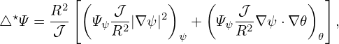
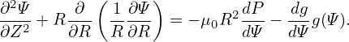
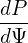
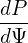

Figure 39: The relation between (r,𝜃) and (R,Z) coordinates.
Consider (r,𝜃) coordinates, which are related to the cylindrical coordinates (R,Z) by Z = r sin𝜃 and R = R0 + r cos𝜃, as shown in Fig. 39.
Next, we transform the GS equation from (R,Z) coordinates to (r,𝜃) coordinates. Using the relations R = R0 + r cos𝜃 and Z = r sin𝜃, we have
 | (564) |
 | (565) |
 | (566) |
 | (567) |
The GS equation in (R,Z) coordinates is given by
 | (568) |
The term ∂Ψ∕∂Z is written as
Using Eq. (569), ∂2Ψ∕∂Z2 is written as
 | (571) |
sin𝜃 =  . .
|
cos𝜃 = −Z = −Z
|
 | (572) |
| cos𝜃 =  |
|
| (573) |
Summing the the right-hand-side of Eq. (570) and the expression on line (574) yields
 | (576) |
Using these, the GS equation is written as
+  + +  − −  = −μ0(R0+r cos𝜃)2− = −μ0(R0+r cos𝜃)2− g(Ψ), g(Ψ),
|
which can be arranged in the form
 | (577) |
which agrees with Eq. (3.6.2) in Wessson’s book[26], where f is defined by f = RBϕ∕μ0, which is different from g ≡ RBϕ by a 1∕μ0 factor.


![( ) [ ( )]
R-∂- 1-∂Ψ- = R-∂- 1- ∂Ψ--∂r + ∂Ψ-∂𝜃-
∂R R ∂R ∂R R ∂r∂R ∂𝜃 ∂R
-∂-[ 1-(∂Ψ- ∂Ψ-Z-)]
= R∂R R ∂r cos𝜃 − ∂𝜃 r2
∂ ( ∂Ψ ∂Ψ Z ) (∂Ψ ∂Ψ Z ) ( 1 )
= --- ---cos𝜃− ----2 + R ---cos𝜃 − ----2 − -2-
∂(R ∂r ∂ 𝜃r) ∂r ∂𝜃(r R ) ( ) ( )
= ∂2Ψ-∂r-+ ∂2Ψ-∂𝜃- cos 𝜃+ ∂Ψ--∂-cos𝜃− ∂2Ψ--∂r-+ ∂2Ψ-∂𝜃- Z-− ∂Ψ--∂- Z- − 1- ∂Ψ-cos 𝜃− ∂Ψ-Z-
∂r2∂R ∂r∂𝜃∂R ∂r ∂R ∂𝜃∂r ∂R ∂𝜃2 ∂R r2 ∂𝜃 ∂R r2 R ∂r ∂𝜃 r2
(∂2Ψ ∂2Ψ Z ) ∂Ψ sin2𝜃 ( ∂2Ψ ∂2Ψ Z ) Z ∂ Ψ 1 1 (∂Ψ ∂Ψ Z )
= -∂r2 cos𝜃 − ∂r∂𝜃r2 cos𝜃+ -∂r--r--− ∂𝜃∂r-cos 𝜃− ∂𝜃2-r2 r2 +-∂𝜃 Z r32cos𝜃− R- ∂r-cos𝜃 − ∂𝜃-r2
2 2 2 2 2
= ∂-Ψ-cos2 𝜃+ ∂-Ψ-sin--𝜃− 2-∂-Ψ-Z-cos𝜃+ ∂-Ψ sin-𝜃-+ ∂Ψ-Z-12 cos𝜃 (574)
∂r2( ∂𝜃2 r2 ) ∂r∂𝜃 r2 ∂r r ∂𝜃 r3
− 1- ∂Ψ-cos 𝜃− ∂Ψ-1 sin𝜃 (575)
R ∂r ∂𝜃 r](tokamak_equilibrium729x.png)